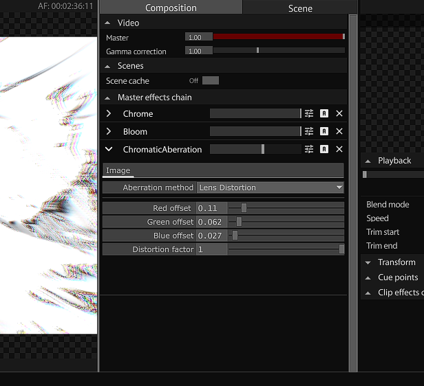

Master effects chain
The master effects chain is the main effects pipeline of your project. Parameterized effects can be added onto the pipeline, affecting the video through a linear flow. Effects can be rearranged, customized, and automated. The concept is the same for clip FX chains.
Each effect has its own dry/wet slider and alpha gate. The dry/wet slider determines the ratio between the dry (unprocessed) and wet (processed) signal. The alpha gate also determines if the effect is active or not. Turning the alpha gate off bypasses the effect, meaning it will not use any resources during runtime.

To add an effect, navigate to the effects library (bottom-right panel), and drag your desired effect to the effects chain. The effect will be immediately applied, and you can customize it by clicking on the chevron to drop down its parameters.
Controls
- Dry/wet - Adjust D/W
- Lock - Preserve the effect as-is, disabling editing and deletion
Effects library
All effects are stored in the '/effects' directory. Each effect has its cooking set to false, as to not consume resources. Effect cooking is automatically turned on once applied to an effects chain.
Adding custom effects
To be recognised as an effect, it must have the operator tag 'effect'. Furthermore, it expects at least one TOP input and output. You can copy an effects template from the '/templates/' folder. Add your custom effects to the '/effects' directory.
You can specify an operator to refer to its parameters, instead of building them yourself. To do this, add a custom parameter to the effect, and name it 'Customparam'. Refer it to an OP, and the parameter page will refer to the operator instead of the effect itself once applied.